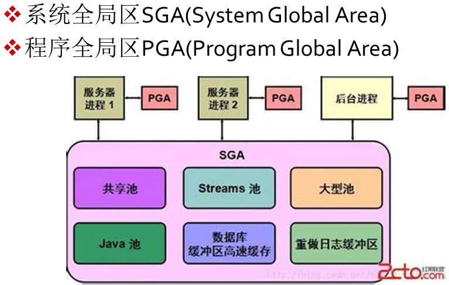
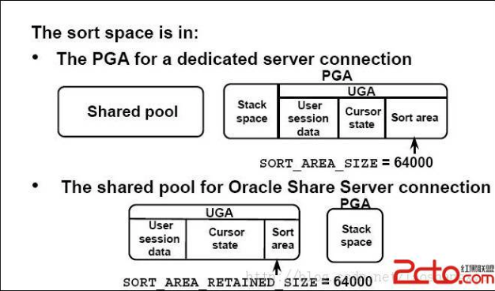
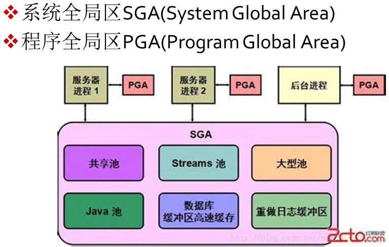
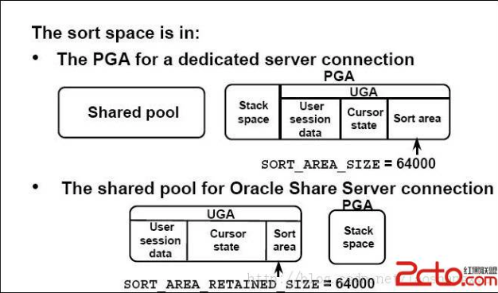

Oracle Database
最后更新时间:
数据库文件
- Data files
- Control files:记录了当前数据库的结构信息,也包含数据文件及日志文件的信息以及相关的状态,归档信息等等在参数文件中描述其位置
- Online redo log files(联机重做日志):记录了数据的所有变化,提供恢复机制,可以被分组管理
- UNDOfiles
- Password file:密码
- Archive log files(归档日志):是redo log files的copy
- Parameter file:数据库参数
Oracle Memory Structures
 



- SGA（System Global Area），即系统全局区，Oracle中最重要的内存区。
- PGA（Process Global Area），即程序全局区，一个进程的专用的内存区。
- UGA（User Global Area），即用户全局区，与特定的会话相关联。
- CGA (CALL Global Area），即调用全剧区，如排序区，HASH JOIN区，位图合并区等
专用服务器连接模式，UGA在PGA中分配。
共享服务器连接模式，UGA在SGA中的Large Pool中分配。
Program Global Area(PGA)
PGA包含有关单个服务器进程或单个后台进程的数据和控制信息。PGA在创建进程时分配，并在终止进程时回收。与由若干个进程共享的SGA相比，PGA是仅供一个进程使用的区。
如果采用专用服务器连接模式，PGA中包含UGA，其他区域用来排序，散列和位图合并。
PGA=UGA+CGA(call global area 调用全局区=排序区+散列区+位图合并区 )
UGA=User session+Cursor state(即private SQL区)+SORT_AREA_RETAINED
User session区：会话信息区，存放用户权限，角色，性能统计等信息
CURSOR（私有SQL 区）就是一个句柄，即指针或引用，指向sql私有区（一个用户的能打开的cursor数由参数open_cursors决定）。然后sql私有区有指针指向共享sql区。私有sql区有两个部分
固定部分：绑定信息，数据结构信息，指针。随session的创建而创建，结束而释放（pmon）
动态部分：执行sql的中间结果集，如多表联查，排序。随sql的创建而创建，结束而释放。
System Global area(SGA)系统全局区
共享池（Shared pool）： 共享池是内存中最关键的部分之一，是oracle缓存程序数据的地方，在共享池中，保留着每一条执行过的sql解析后的全部信息。由于分配给共享池的内存区域是有限的（分配太对会消耗过多CPU资源，分配太少会影响性能）， 所以当有新的SQL执行的时候， 原先已经加载的sql会根据LRU（最近最少使用算法）进行管理。
- library cache （库高速缓存区）：存储已经解析过的sql的信息。
- dictionary cache（数据字典缓存）：存放系统参数。
- Result Cache （结果高速缓存）：用于存储和检索高速缓存的结果。
- SQL query result cache : 将SQL语句的查询结果直接存储在 SQL query result cache中，再次执行相同语句的时候会直接调用内存中的结果集，减少I/O的消耗。
- PL/SQL function result cache : 将PL/SQL函数的正确执行的结果存放在 PL/SQL Function Result Cache中， 再次执行相同函数时直接调用内存中的结果集 ，减少IO消耗 。
Fixed SGA（固定SGA）：里面存储了内存中其他区的位置。
Redo buffer（重做缓冲区）：如果数据需要写到在线重做日志中，则在写至磁盘之前要在 Redo Buffer 中临时缓存这些数据。数据在重做缓冲区中停留的时间不会太长，oracle会通过以下机制，将数据通过LGWR从 Redo Buffer 中 flush 到磁盘上：
- 每3秒一次
- 请求提交 commit
- 要求 LGWR 切换日志
- 重做缓冲区 1/3 满，或者包含了 1MB的缓存重做日志数据
Block buffer cache（块缓冲区）：将脏数据写入磁盘之前或者从磁盘读取数据块之后，这些数据会存放在Block buffer cache 中。为了根据不同的需求保留数据，oracle把这块内存分成了三个部分
- defaul pool （默认池）：所有段块一般都在defaul pool中。在oracle 8.0 之前的版本， defaul pool 就是唯一缓冲区池。
- keep pool （保留池） ：频繁访问的段会存放在 keep pool 中，以此来防止数据 aging
- recycle pool （回收池） ：将随机大段与其他段分开保存，访问很随机的大段可以放在 recycle pool 中，因为大块会导致过量的缓存区 flush，并且如果当你在想用这个块的时候，此时的数据也许已经aging而退出缓存。
Large pool （大池） ：用于大块内存的分配。shared pool 不会处理过大的内存块，所以这部分数据就交给 large pool 进行处理， 并且处理方式与 shared pool不同，large pool 不会缓存和重用这些大块，在这些内存用完之后，会立即释放。large pool 专用以下几种情况：
- 共享服务器连接，用于在SGA中分配 UGA区，当用户断开以后，UGA会被快速释放。
- 语句并行执行，允许分配进行间的消息缓存区，这些缓冲区用于协调并行查询服务器。一旦发送了缓冲区中的消息，便立即释放
- 备份，备份缓冲区很大，在oracle用完了这些缓冲区，就会被立即释放。
Java pool（Jave 池） ：在运行Java的时候会用到 java pool。
Stream pool （流池）：10G版本 引入，用于缓存流进程在数据库间复制/移动数据时使用的队列消息，是 oracle advanced queue（oracle 高级队列）技术的一种拓展应用，需要注意的是，如果stream pool 设置过小，在应用EXPDP技术时，会产生错误信息。
共享池 shared pool
解析的过程是一个相当复杂的过程，它要考虑各种可能的异常情况比如SQL语句涉及到的对象不存在、提交的用户没有权限等等而且还需要考虑如何执行SQL语句采用什么方式去获职数据等解析的最终结果是要产生oracle自己内部的执行计划从而指导SQL的执行过程。可以看到，解析的过程是一个非常消耗资源的过程。因此oracle在解析用户提交的SQL语句的过程中如果对每次出现的新的SQL语句，都按照标准过程完整的从头到尾解析一遍的话效率太低尤其随着并发用户数量的增加、数据量的增加数据库的整体性能将直线下降。
shared pool = Library cache + dictionay cache
共享池
oracle会将用户提交来的SQL语句都缓存在内存中。每次处理新的一条SQL语句时都会先在内存中查看是否有相同的SQL语句如果相同则可以减少最重要的解析工作〔也就是生成执行计划)从而节省了大量的资源：反之如果没有找到相同的SQL语句，则必须重新从头到尾进行完整的解析过程这部分存放SQL语句的内存就叫做共享池( shared pool)当然shared pool里不仅仅是SQL语句，还包括管理shared pool的内存结构以及执行计划、控制信息等等内存结构，oracle通过内存结构管理.
buffer catch

ORACLE使用HASH算法，把buffer cache中每个buffer的buffer header串联起来，组成多条hash chain，一條hash chain由一個hash Bucket管理，hash bucket就是链的链头，从链头引出独立的双向链。一個hash buffer chains latch来保护多个hash chain
根据LRU（Least Recently User）算法，对buffer cache进行分配和换出（age out）管理
通常数据的访问和修改都是需要通过buffer cache来完成的,当一个server process访问数据的时候,首先需要确定的是,我们所需要的数据在buffer cache中是否存在,如果数据在buffer中存在呢,我们还需要根据data buffer的状态,来判断是否进行db block gets还是consistent gets,如果数据在buffer中不存在,则我们需要在buffer cache中寻找足够的空间来加载我们所需要的数据,如果在buffer cache中我们找不到足够的空间,那么我们就需要触发DBWn进程,去写出脏数据,用来释放我们的buffer空间.

Oracle通过几个list来对buffer进行管理.其中最为突出的就是LRU List还有Dirty List,这些list上面存放的就是具体指向buffer的指针.
LRU List主要就是用来维护内存中的buffer,按照我们LRU(Least Recently Used)的方式来进行管理.那么针对不同的Oracle版本呢,管理的方式也不同.但是有一点需要了解的是,当数据库初始化的时候,所有的buffer都被捕HASH到LRU List上进行管理.当我们从数据文件中读取数据的时候我们现在要在LRU List上面寻找free的buffer,然后将数据读取到我们所找到的这个free buffer中.只要数据被修改了,那么这个buffer的状态就变为了dirty,那么Oracle就会把这个buffer从LRU List移到Dirty List(Checkpoint Queue)中去.在Dirty List上的buffer都是一些候选的稍后会被DBWn写出到数据文件的buffer,那么这里还有一点需要注意的是:一个buffer要么存在于LRU List上面,要么存在于Dirty List上面,不可能同时存在于两个List上面.

Redo log Buffer 日志缓冲区
日志中记录数据块的地址，更改的时间以及对数据块做了哪些改变。
Oracle在执行任何DML和DDL操作改变数据之前，都会将恢复所需要的信息，先写入redo log buffer，然后再写入database buffer cache。
- 如果数据和回滚数据不在database buffer cache中，server process会将它们从dbf文件中读取到database buffer cache中。
- server process会在要修改的数据行上添加行级锁。
- server process将数据的变化信息和回滚所需的信息都写入redo log buffer。
- server process将对数据所做的修改后的数据信息写入database buffer cache,然后将database buffer cache中的这些数据标记为脏数据（此时内存中的数据和磁盘上的数据是不一致的）。
- LGWR将重做日志缓冲区中的数据写入重做日志文件中。
- DBWn将database buffer cache的脏数据写入数据文件中。
Log Writer(LGWR)
每次 mommit 都会将 redo log buffer 写入到 redo log file
LGWR的触发条件：
- 事务提交时
- Log buffer中的数据超过1m时
- 当log buffer中的数据超过_log_io_size隐含值时
- 每隔3s
当事务提交时，会产生一个提交的redo record,这个redo record写入log buffer后，服务器进程（server process)会触发LGWR进行日志写操作。
有些系统中，平均每个事务的大小很大，有的为1m甚至更大，但是平均下来每秒的事务数却很小，这样通过提交来触发LGWR工作的机会很小，很有可能导致数据的积压，而数据量超过1m触发LGWR进行日志写操作正是为了解决这种情况。
_log_io_size参数的默认值是log buffer的三分之一，这个参数的意义是当log buffer中的buffer占用量超过这个参数的数值时会触发LGWR进行日志写操作，从而防止log buffer空间被消耗殆尽。
如果一个系统长时间没有事务提交，log buffer中的空间也很空闲，就可能导致log buffer中的数据长时间不写入redo log file中，增加数据丢失的风险，所以oralce通过每隔3s触发一次LGWR进行日志写操作大大的降低了这种风险。
Background Processes
Database Writer(DBWrn)
DBWrn:将脏数据写到 data file
System monitor
Process monitor
Checkpoint(CKPT)
出发之后就会将内存中的脏数据写入维护局文件中用于保存内存与文件的内容同步.
用于降低实例崩溃后的恢复时间.
Read Consistency
SCN:数据库在某一个时间的状态

Oracle Storage Hierarchy
Recovery
用 redo log files 来进行回滚.
Optimizer(优化器)

自动优化查询语句.
优化器（optimizer）是oracle数据库内置的一个核心子系统。优化器的目的是按照一定的判断原则来得到它认为的目标SQL在当前的情形下的最高效的执行路径，也就是为了得到目标SQL的最佳执行计划。依据所选择执行计划时所用的判断原则，oracle数据库里的优化器又分为RBO（基于原则的优化器）和CBO（基于成本的优化器，SQL的成本根据统计信息算出）两种。
表上无索引:Full Table Scan
Rowid Scan
查询表的x%的数据:Sample Table Scan
https://blog.csdn.net/u010081710/article/details/73733214
RBO（基于原则的优化器）
Oracle会在代码里事先为各种类型的执行路径定一个等级，一共15个等级，从等级1到等级15，oracle认为等级1的执行路径是效率最高的，等级15是执行效率最差的。对于等级相同的执行计划，oracle根据目标对象的在数据字典中缓存的顺序判断选择哪一种执行计划。RBO是一种适合于OLTP类型SQL语句的优化器。相对于CBO而言，RBO有着先天的缺陷，一旦SQL语句的执行计划出现问题，将很难调整。那么RBO执行计划出现问题，怎么调整目标SQL的执行计划呢？一般有如下方法：等价改写目标SQL，比如在where条件对number和date类型的列添加0（deptno+0>100），varchar2或char类型的列可以添加一个“空字符”，例如“||”。对于多表连接的SQL，可以改变from表的连接顺序（RBO会按照从右往左的顺序决定谁是驱动表，谁是被驱动表。）来达到改变目标SQL执行计划的目的。我们也可以改变相关对象在数据字典中缓存的顺序（创建顺序），来改变执行计划。RBO最大的缺点是以oracle内置代码的规则作为判断标准，而并没有考虑到实际目标表的数据量以及数据分布情况。
CBO（基于成本的优化器，SQL的成本根据统计信息算出）
CBO选择执行计划时，以目标SQL成本为判断原则，CBO会选择一条执行成本最小的执行计划作为SQL的执行计划，各条执行路径的成本通过目标SQL语句所涉及的表、索引、列等的统计信息算出。这里的成本是oracle通过相关对象的统计信息计算出来的一个值，它实际上代表目标SQL对应执行步骤所消耗的IO、CPU、网络资源（针对于dblink下的分布式数据库系统而言）的消耗量，oracle会把网络资源的消耗量计算在IO成本内，实际上你看到的成本为IO、CPU资源，另外需要注意的是，oracle在未引入系统统计信息之前，CBO所计算的成本值实际全是基于IO计算的。
//TODO: Optimizer Operators(PPT43-59)
index 索引
如果一个数据表中存有海量的数据记录，当对表执行指定条件的查询时。常规的查询方法会将所有的记录都读取出来，然后再把读取的每一条记录与查询条件进行对比，最后返回满足条件的记录。这样进行操作的时间开销和I/O开销都很大。对于这种情况，就可以考虑通过建立索引来减小系统开销。
如果要在表中查询指定的记录，在没有索引的情况下，必须遍历整个表，而有了索引之后，只需要在索引中找到符合查询条件的索引字段值，就可以通过保存在索引中的ROWID快速找到表中对应的记录。例如，如果将表看做一本书，索引的作用类似于书中的目录。在没有目录的情况下，要在书中查找指定的内容必须阅读全文，而有了目录之后，只需要通过目录就可以快速找到包含所需内容的页码（相当于ROWID）。
用户可以在Oracle中创建多种类型的索引，以适应各种表的特点。按照索引数据的存储方式可以将索引分为B树索引、位图索引、反向键索引和基于函数的索引；按照索引列的唯一性可以分为唯一索引和非唯一索引；按照索引列的个数可以分为单列索引和复合索引。
索引分类
- b*tree index：几乎所有的关系型数据库中都有b*tree类型索引，也是被最多使用的。其树结构与二叉树比较类似，根据rid快速定位所访问的行。
- 反向索引：反转了b*tree索引码中的字节，是索引条目分配更均匀，多用于并行服务器环境下，用于减少索引叶的竞争。
- Descending Index 降序索引：8i中新出现的索引类型，针对逆向排序的查询。
- 位图索引：使用位图来管理与数据行的对应关系，多用于OLAP系统。
- 函数索引：这种索引中保存了数据列基于function返回的值，在select * from table where function(column)=value这种类型的语句中起作用。

逻辑上：
- Single column 单行索引
- Concatenated 多行索引
- Unique 唯一索引
- NonUnique 非唯一索引
- Function-based函数索引
- Domain 域索引
物理上：
- Partitioned 分区索引
- NonPartitioned 非分区索引
- B-tree：
- Normal 正常型B树
- Rever Key 反转型B树
- Bitmap 位图索引
索引结构：
B-tree：
- 适合与大量的增、删、改（OLTP）；
- 不能用包含OR操作符的查询；
- 适合高基数的列（唯一值多）
- 典型的树状结构；
- 每个结点都是数据块；
- 大多都是物理上一层、两层或三层不定，逻辑上三层；
- 叶子块数据是排序的，从左向右递增；
- 在分支块和根块中放的是索引的范围；
Bitmap:
- 适合与决策支持系统
- 做UPDATE代价非常高
- 非常适合OR操作符的查询
- 基数比较少的时候才能建位图索引
https://www.jianshu.com/p/ebf56728e087
https://www.jb51.net/article/50703.htm
Execution Plans 执行计划
什么是Oracle执行计划？
执行计划是一条查询语句在Oracle中的执行过程或访问路径的描述.
错误案例
and 的优先级高于 or 所以导致 or 后面的语句没有做id相等的筛选操作,导致出现巨量数据
1 | |